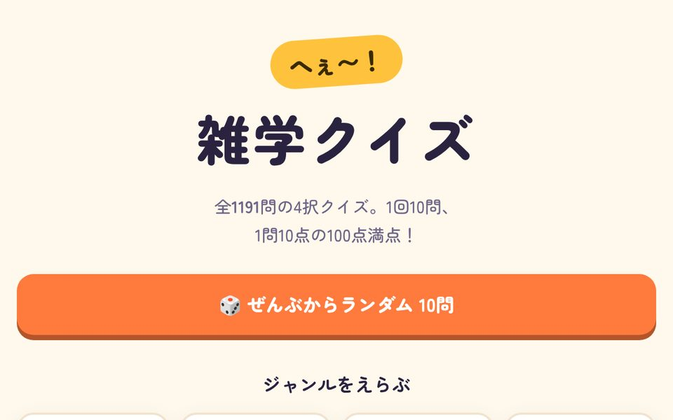
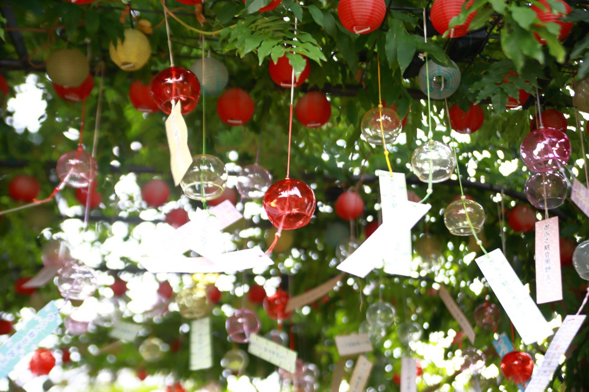
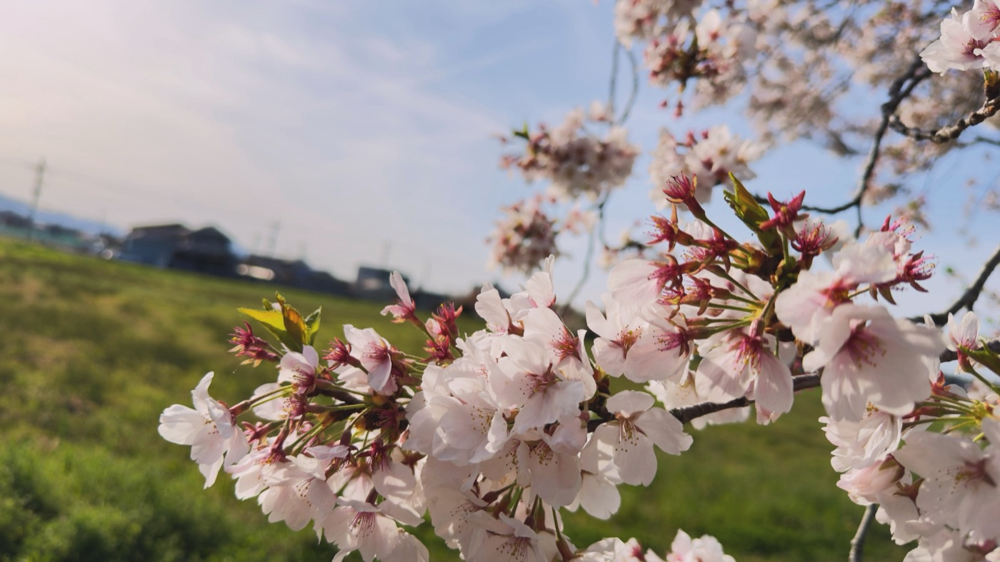
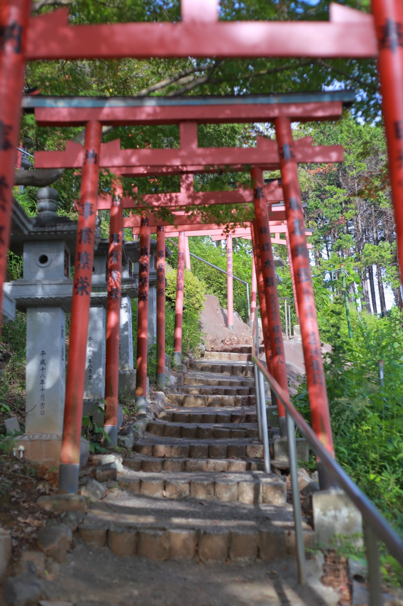
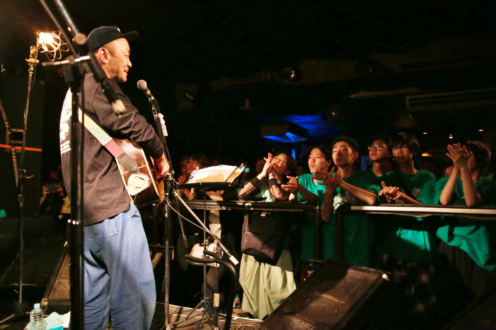
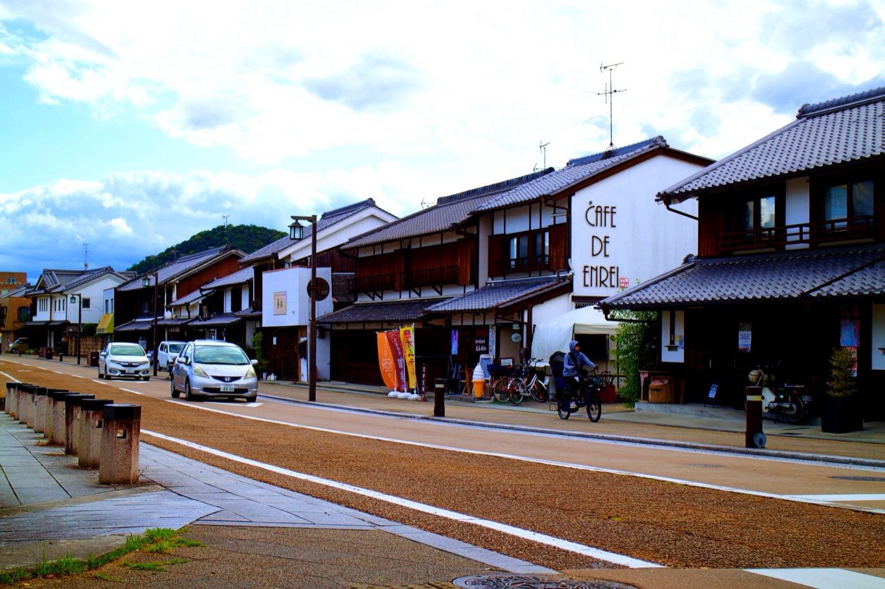
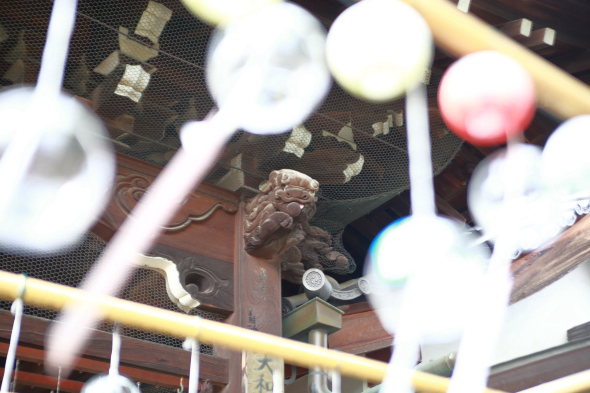
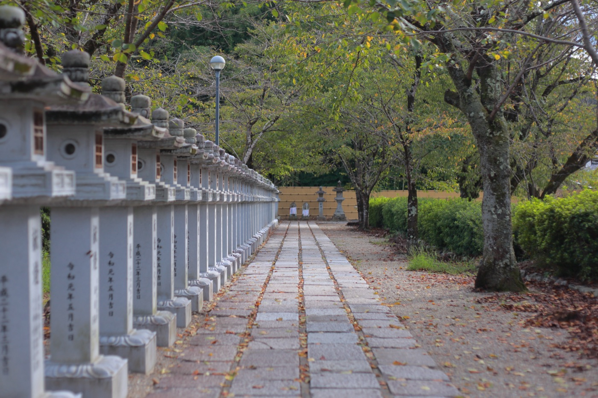

▶ ブラウザで遊べるこんにちは！
吉井亮翔Akito Yoshii
ゲームを作って、写真を撮って、楽譜を書いています。
つくることが好きな、情報系の大学生です。
- ゲーム制作
- フォトグラファー
- 編曲・楽譜出版
- バンド・ライブ活動
プロフィール
- 名前
- 吉井 亮翔（よしい あきと）／ Akito Yoshii
- 所属
- 龍谷大学 先端理工学部 数理・情報科学課程（2024年度入学）
- 活動
- ゲーム制作、バンド・ライブ活動、フォトグラファー、編曲家、楽譜出版
- サークル
- Rock'n'roadST 18期 部長（学生代表）
6つ以上の
ゲーム作品
ゲーム作品
40曲の楽譜を
販売
販売
22枚の
写真を掲載
写真を掲載
ゲーム制作
大学のゼミで、Unity と C# を使ってゲームを作っています。ブラウザですぐ遊べるゲームも公開しています。

テトリス
ふつうのテトリスに加えて、3×3 のランダムな形のブロックや、列を消すと縦にも消える「ばくだんブロック」が出てくるパーティーモードを作りました。スマホのタッチ操作にも対応しています。

おかしなタワー
お菓子を落として、高く積みあげるゲームです。着地して 2 秒止まるとその場で固定されます。お皿から落としたらゲームオーバー。お菓子の絵はすべてプログラムで描いています。

ふっとびアリーナ
ダメージをためて、相手をステージの外までふっとばす対戦アクションゲームです。コンピューターとも戦えます。

いきもの繁殖シミュレーター
微生物から動物まで 23 種類の生き物が、食べて・にげて・子どもを作って増えていきます。温暖化や開発、外来種など、人間のえいきょうを自由にあたえて変化を観察できます。

ホーホー博士の水平思考クイズ
AI が出題者になって、「はい・いいえ・関係ありません」で答えてくれる水平思考クイズ（ウミガメのスープ）です。
写真
フォトグラファーとして、旅先の風景や祭り、ライブ、カフェなどを撮っています。写真をクリックすると大きく見られます。







編曲・楽譜出版
楽譜販売サイト Piascore のショップ「しうちゃん」で、shiu 名義で楽譜を販売しています。バンド曲のドラム譜が中心で、原曲を耳で聴いて書き起こし、そのままの「完コピ版」と、たたきやすくした「簡略版」を作っています。
- 620
- Basket Case
- come back my dog
- Dear My Friend
- Departure
- keep going
- kitchen
- midnight cruising
- MONSTER DANCE
- MyFirstKiss
- NE-TAXI
- Set The Fire
- squall
- STAY GOLD
- Tank-top of the world
- アパシー
- かわE
- げんきもりもり！モーリーファンタジー
- シルエット
- ナイトオンザプラネット
- ないものねだり
- ハッピーウェディング前ソング
- フルドライブ
- マイリッチサマーブルース
- メシアになった
- ラブホテル
- ロキ
- 愛の標識
- 運命
- 喜志駅周辺なんもない
- 恐竜〜Dynamite Soul〜
- 盛者必衰の理、お断り
- 絶望MAQUIA
- 素晴らしい世界
- 曇天
- 百八円の恋
- 本当はね、
- 無線LANばり便利
- 癒着☆NIGHT
- 栞
組み込み・IoT
M5Stack × Firebase ワンタイムQR認証
M5Stack の画面に表示した QR コードをスマホで読みとり、Google アカウントでログインして本人確認をするシステムです。QR コードの中のトークンは 1 回しか使えず、同じアカウントで 2 回認証することもできません。認証の記録は Cloud Firestore に保存します。
- M5Stackワンタイムの QR コードを表示
- スマホQR を読みとってページを開く
- Google ログインFirebase Authentication
- チェックトークンが正しい・未使用か確かめる
- 記録Firestore に保存して、トークンを使用済みに
大学での学び
プログラミング
C 言語でポインタや動的メモリ管理など、メモリを直接扱うレベルのプログラミングを学びました。Python では、日本語のレビュー文を word2vec でベクトルに変換し、機械学習で「ポジティブ／ネガティブ」を判定する感情分析モデルを作りました。
アルゴリズムとデータ構造
リスト・木・グラフなどのデータ構造と、ソート、動的計画法、最短経路探索といったアルゴリズムを C 言語で実装し、どの方法がどれだけ速いのかを計算量で比べながら学んでいます。
微分積分
複雑な関数を多項式で近似する Taylor 展開や、無限に続く和が収束するかの判定、さらに偏微分や重積分を使った多変数関数の解析まで、理工系の土台になる解析学を学んでいます。
波動・物理数学
ばねでつながった質点の連成振動を行列で解き、質点の数を無限に増やした極限から波動方程式を導きます。弦の振動や音のような「波」を、数学のモデルとして扱う方法を学んでいます。
数学・理論
集合と論理、プログラミング言語の文法を数学的に扱う形式言語理論、音や信号を周波数成分に分解するフーリエ解析など、情報科学を支える理論を学んでいます。
情報システム・認知科学
情報処理システムの仕組みに加えて、認知科学では人の判断が直前に見た数値に引っぱられる「係留効果（アンカリング）」などを実験で検証し、Jupyter でデータを分析して考察しました。
資料
資料置き場塾用・講義関連・その他れんらく
お仕事のご相談や感想など、お気軽にどうぞ。